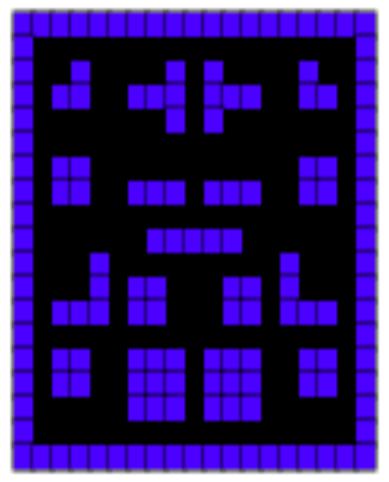

Pamaf is a student project in which the player fights the other teachers in a Pac-man style. This
document
describes the main ideas/concepts, as well as the User Experience and the way in which the authors
collaborated.
2. Introduction
Games have always been a way in which people had fun. Originating with Pac-man, Pamaf wants to achieve
the
same greatness by adding a twist to the game: phantoms become teachers and our yellow little friend is
represented by our profile picture. This way, students are able to face one of their biggest nightmares
in
a fun and addicting way.
3. Summary
We have started from the idea that we would like a simple interface in which the main point is for the
players to get to the game as fast as possible. We did respect that, but we have also added a few other
pages, like History and Rules. There is also a Contact page if you ever feel the need to reach us.
There have been ups and downs and a lot of changes during the first phases of development, but overall
we
think that we've done a good job on having a layout that is fast, good on the eye and also easy to
understand and easy to navigate.
4. Intermediate stages
Implementation is being done for login functionality through external APIs. (Facebook, Google,
Github)
Game is being added along with its features (maps, scores, lives, special points, ghosts,
players...).
Also, other functionalities related to the game are being added: start game, create game,
singleplayer, multiplayer, mute / unmute sound...
The multiplayer part of the game was inspired from JackBoxGames,
where
the creator of the game lobby generates a token that can be used by another player to connect
to the same lobby.
In our game, the main player (the creator of the game) plays the role of the main character
from the original game, Pacman,
while the other player plays the role of the ghost. Player ONE collects points and runs away
from the ghost/player TWO and
if the luck is in his favor, he might find a special dot/point that gives him the mighty power
that enables him to eat player TWO.
Player TWO follows player ONE as he can eat him, but he must run away when his opponent finds
that special dot/point that makes
him immortal for some seconds. One cannot simply stand the mighty power of the special dot.
Connection to a database in order to store our client's data. (score)
5. Local/external data usage (Data modelling)
Client data is stored on a database accessed in a easy manner by us developers on our back-end module.
As a consequence of using an external website for our users to log on our application, we have to
execute calls on external APIs, such as:
In the next segment, we will talk about how we are going to use the Facebook API in order to
authenticate into our website using your Facebook profile.
The Facebook SDK for JavaScript doesn't have any standalone files that need to be downloaded or
installed, instead you simply need to include a short piece of regular JavaScript in your HTML that
will asynchronously load the SDK into your pages. The async load means that it does not block loading
other elements of your page.
The following snippet of code will give the basic version of the SDK where the options are set to their
most common defaults. You should insert it directly after the opening "body" tag on each page you want
to load it:
This code will load and initialize the SDK. You must replace the value in your-app-id with the ID of
your own Facebook App. You can find this ID using the App Dashboard.
Next, we would like our users to be able to login/register using Facebook login (another developer
tool). To do that, we simply run the following code: Firebase API
After all, we have used Firebase API to be able to authenticate using external platforms logins
(Facebook, Google, Github).
An easy guide for doing so was already well written on Firebase's main website.
Authenticate Using Facebook Login with JavaScript - Here
6. Client-side data storage
The concept of client-side storage has been around for a long time. Since the early days of the web,
sites have used cookies to store information to personalize user experience on websites.
They're the earliest form of client-side storage commonly used on the web.
Because of that age, there are a number of problems — both technical and user experience-wise —
afflicting cookies.
These problems are significant enough that upon visiting a site for the first time, people living in
Europe are shown messages informing them if they will use cookies to store data about them.
This is due to a piece of European Union legislation known as the EU Cookie directive. Nowadays,
WebStorage and IndexedDB is the way to go.
The Web Storage API provides a very simple syntax for storing and retrieving smaller, data items
consisting of a name and a corresponding value.
This is useful when you just need to store some simple data, like the user's name, whether they are
logged in, what color to use for the background of the screen, etc.
The IndexedDB API provides the browser with a complete database system for storing complex data. This
can be used for things from complete sets of customer records to even complex data types like audio or
video files.
While there is the Cache API that promises way better techniques of storing information on the
client-side, it is not yet supported by many browsers and such, we will be using WebStorage and
IndexedDB.
7. Game info
Related to our game mechanics, collisions have been implemented for all the characters.
Using pure math and the matrix of the map itself, possible barriers have been calculated and therefore
successfully avoided.
The players control their entity using their keyboard, while teacher bots are moving freely by
themselves
calculating random directions from possible ones.
When the players grab the special dot/point, they become invincible and therefore they are able to eat
their
opponents.
8. Map generation
As we like to bring diversity to the player's experience, we could not escape the need to generate
diverse and fun maps.
In the singleplayer mode, the player has the honour to take a walk in the classic UAIC University Corp
C hallways, in the Faculty of Computer Science.
These are the hallways maps. Each one represents a certain hallway in the building, such as floor 2 (as
Year 1), floor 3 (as Year 2)
and floor 7 (as Year 3).
Other maps are shown randomly when the player enters a room. What we know for sure about these maps is
that
they have no dead-ends, they are symmetrically generated for left and right sections, for each
different top, bottom, side
and center sections and that they have two exit portals connected to one another.
The generation of the maps begins with an empty matrix representing half of the final map in which we
start adding pairs of blocks
in four rounds: top section, bottom section, sides section and center section.

After we have chosen the blocks for each one of the sections, we can fill up the spaces and correct the
path flow were needed.
In the end, the half maps are stuck together symmetrically and extras, such as player, ghost, special
points and portals positions are being set on the matrix, all these making it possible for
the map to be used in further game functionalities.
The maps have been tested constantly so that we got the assurance that the characters would walk
well
on the paths and points and other extras are set on the right positions.
9. Learn more
Since this fun adventure has come to an end, we recommend you to take a sip of this fun recreation of
the original Pac-Man game.
We wish you the best luck in finishing the game before the ghosts catch you and most importantly, HAVE
FUN.
Take a look at this simple guide to understand the basics of our website and the game. GUIDE
10. Conclusion
In conclusion, we hope to be able to deliver a top-notch product that will assemble a fun way in which
people can experience the legendary Pac-Man game with an added twist.
We thank you for reading this Scholarly Article and we'll see you soon!
Cheers!